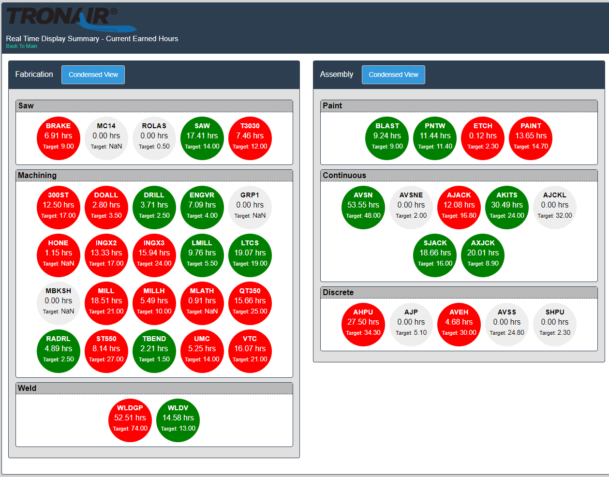
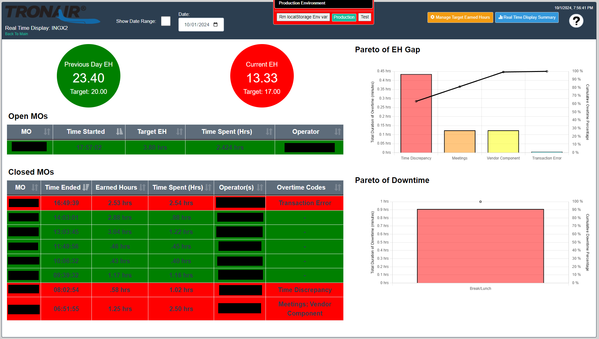
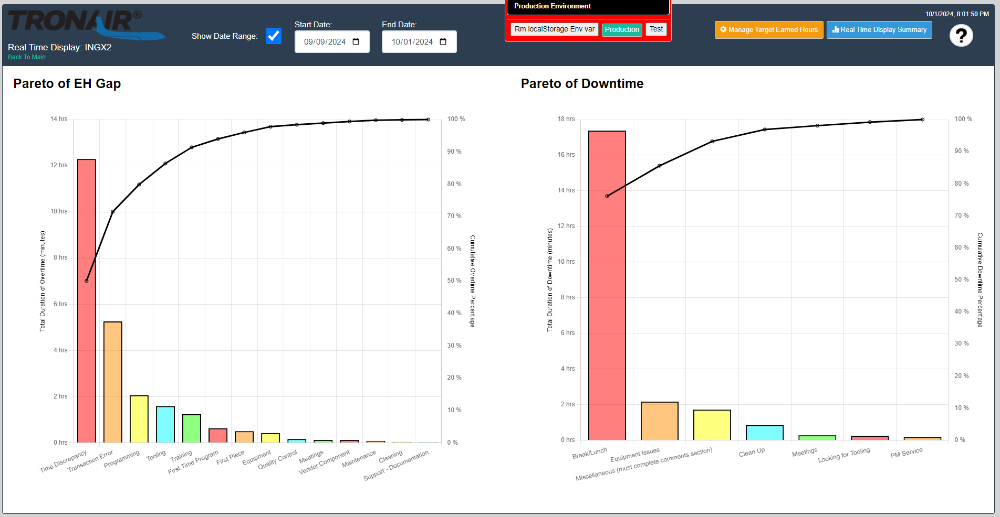
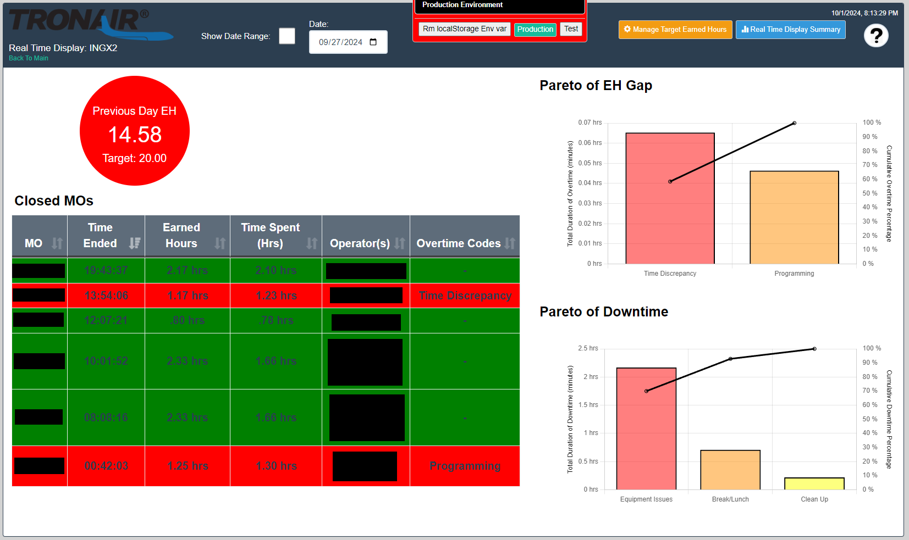

Below are just a few of the projects I have developed from the ground up and integrated into our web application at Tronair.
At Tronair, I created a module for technicians to enter and approve part inspection requirements with dimensional specifications. I also enabled operators to perform regular inspections during production based on defined requirements. I created functionality for reviewing historical inspection data for quality assurance and tracking. I developed the full stack application on the existing web application using HTML, CSS, Javascript with Jquery on the front-end and PHP with SQL on the backend. I designed the SQL database to support all the data for this module as well.
The below video demonstrates the ability to edit the part inspection requirements using the UI I developed.
The below video demonstrates how an operator would enter the actual inspection results after production the part.
I also developed a Real Time Display (RTD) that production uses as a visual indicator of performance for the various workcenters. The default state shows the daily progress based on a set target for each workcenter at that point in time. Clicking on a workcenter reveals further details about the individual jobs that are currently being worked on, jobs completed on the given day, and details of the issues that have been reported. There is also an option to view historical data for individual workcenters from this view by changing the date selector or selecting a date range.
This image shows the summary of the performance of each workcenter. Clicking on one of the "bubbles", will take you to the detailed view for that workcenter.
This view is using live production data and automatically refreshes every minute. It shows the performance targets compared to the actual progress, jobs in progress, jobs completed during the current day, and any issues that have been reported. The jobs are also color-coded to indicate if they are within their time targets. I developed the frontend using HTML, CSS, and Javascript with jQuery and ChartJS and DataTables. The data is pulled either directly from our MRP system or from a cache in our Microsoft SQL database. The backend is developed using PHP with SQL.
This view was developed to show the data for any issues that have been reported. The date range of the data is user selectable.
This view was developed to show the data available for a date in the past including the performance for that day, jobs closed that day, and any issues that were reported.
